Overview
결제 전환부터 교환·반품까지 일관된 구매 경험 구축하기
기존 결제 플로우는 정보의 우선순위가 불명확해 구매 단계에서 이탈을 유발하고 있었으며 교환·반품 역시 명확한 처리
기준이 없어 관련 부서의 반복적인 조율이 필요했습니다. 이에 구매 퍼널과 사용자 행동을 분석해 정보 구조와 결제 흐름을
의사결정 순서에 맞게 재설계하고 일관된 사용자 경험과 운영 대응이 가능하도록 교환·반품의 상태값과 처리 기준을
구조화했습니다. 그 결과 결제 전환율은 8%p 상승하고 구매 퍼널 이탈률은 9%p 감소했습니다.
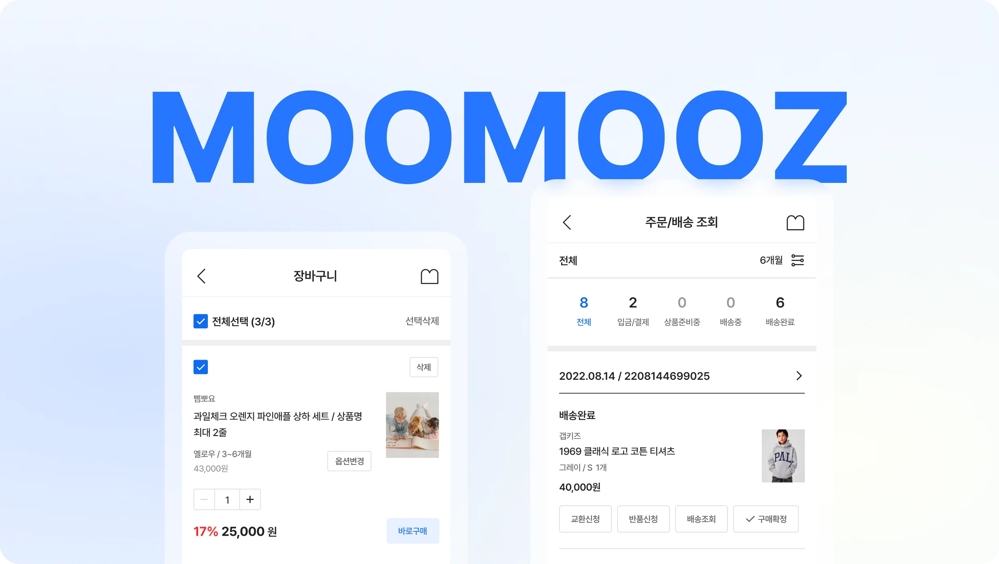
Background
결제로 이어지는 과정에서 단계별
이탈이 누적되고 있었어요.
장바구니 진입부터 결제 완료까지 구매 퍼널을 분석한 결과, 주문 버튼 클릭 전환 구간에서 28%p,
주문서 진입 후 결제 수단 선택 구간에서 23%p, 결제 수단 선택 후 결제 시도 구간에서 16%p의
이탈이 발생했습니다. 장바구니에 진입한 사용자 중 최종 결제를 완료한 비율은 26%에 머물렀으며 구매를 진행하는 주요 단계마다 이탈이 반복되고 있었습니다.
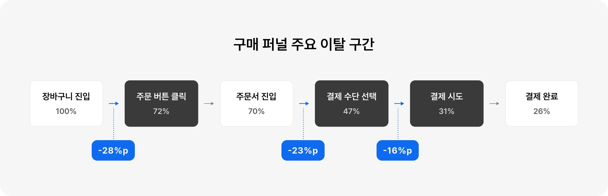
Discovery
구매 여정에 불필요한 정보와 분산된 결제 구조가
사용자의 의사결정을 방해하고 있었어요.
이탈이 집중된 세 구간의 행동 데이터를 분석한 결과 구매를 결정하는 데 필요한 상품·혜택·결제 정보가 여러 영역에 분산되어 사용자가 결제 조건을 반복해서
확인한다는 공통점이 있었습니다. 이를 통해 정보의 부족보다 구매 조건과 선택 결과를 파악하기 어려운 구조가 사용자의 결제 진행을 방해하고 있음을 발견했습니다.
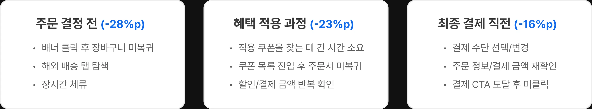
Problem
구매 의사결정에 필요한 정보와
주문 처리 기준이 명확하지 않았어요.
사용자의 결제 판단부터 교환·반품 처리까지 이어지는 전체 주문 여정을 공통된 기준으로 재정의할
필요가 있었습니다.
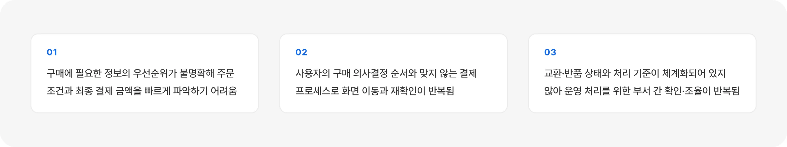
Hypothesis
구매 필수 정보와 결제 흐름을 사용자의 의사결정 순서에 맞게 재설계하면 반복 탐색과 판단 부담이 줄어 결제 완료율은 높아질 것이다.
또한 교환·반품의 진행 상태와 단계별 처리 기준을 명확히 정의하면 사용자 편의성과 운영 효율이 함께 개선될 것이다.
Strategy 01
정보 우선순위를 재설계하고
개선 방향 세우기
정보의 우선순위를 구매 연관성, 이용 빈도, 의사결정에 미치는 영향을 기준으로 4단계로
분류했습니다. 각 화면이 구매 여정에서 수행하는 역할에 맞게 정보 위계와 노출 방식을 재설계하고 구매 진행에 필요한 정보는 우선 배치하고 같은 판단에 필요한 정보를 통합했습니다. 또한 이용
빈도와 구매 관련성이 낮은 정보는 제거하거나 후순위로 조정했습니다.
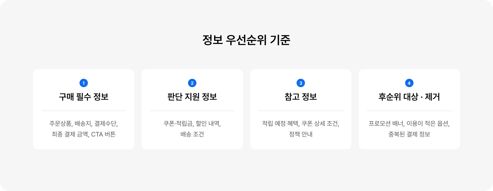
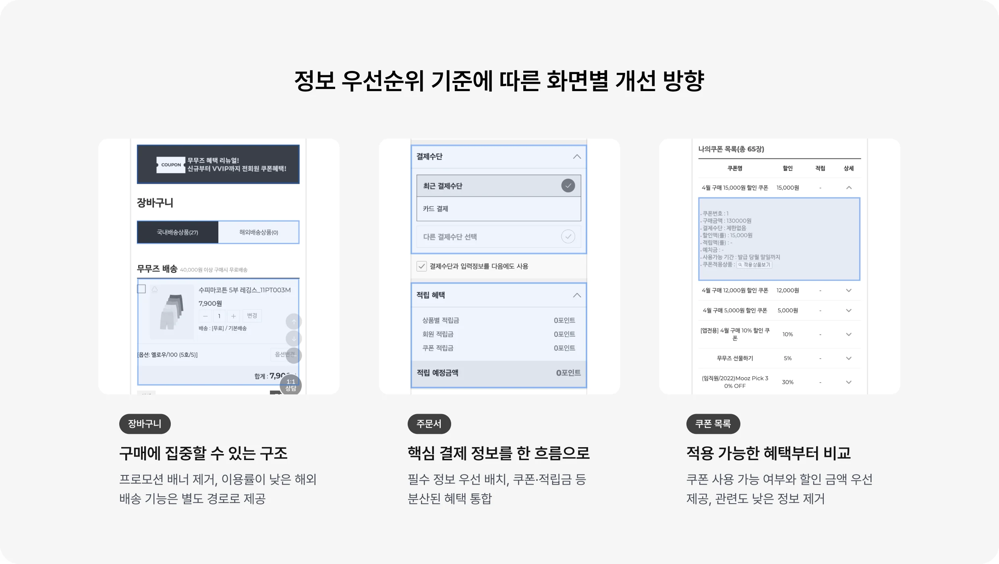
Strategy 02
구매 의사결정 순서에 따라
결제 플로우 재구성하기
기존 주문서는 혜택, 결제 수단, 최종 결제 금액이 여러 영역에 분산되어 있어 사용자가 화면을 오가며 선택 결과를 반복해서 확인해야 했습니다. 이에 화면에 배치된 기능의 순서가 아니라 사용자의 구매 의사결정 순서를 기준으로 결제 흐름을 주문 조건 확인 → 결제 조건 설정 → 최종 확인의 3단계로
재구성했습니다.
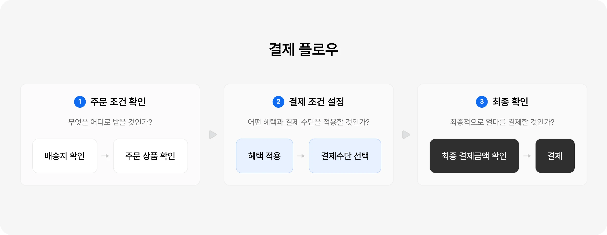
Strategy 03
교환·반품 상태값에 따른
Action Button 정의하기
사용자 화면과 운영자 도구에서 사용하는 상태값을 하나의 프로세스로 연결하고 각 단계에서
제공해야 하는 액션과 상태를 명확하게 정의하고 정상·예외 흐름을 정책화해 사용자 안내와 운영 처리
기준의 일관성을 높였습니다.
1. Front와 BO 상태 연결
사용자가 확인하는 상태와 운영자가 처리하는 상태를 매핑하고 운영자의 처리 결과가 사용자 화면에 어떤 상태로 노출되는지 정의하여 상태 변경에 따라 일관된 버튼을 제공합니다.
2. 상태별 가능한 액션 정의
사용자는 교환·반품 신청, 신청 취소, 거절 사유를 확인하고 운영자는 접수 승인, 철회, 회수 완료, 검수 완료, 거절 처리를 확인하여 불필요한 액션을 제한합니다.
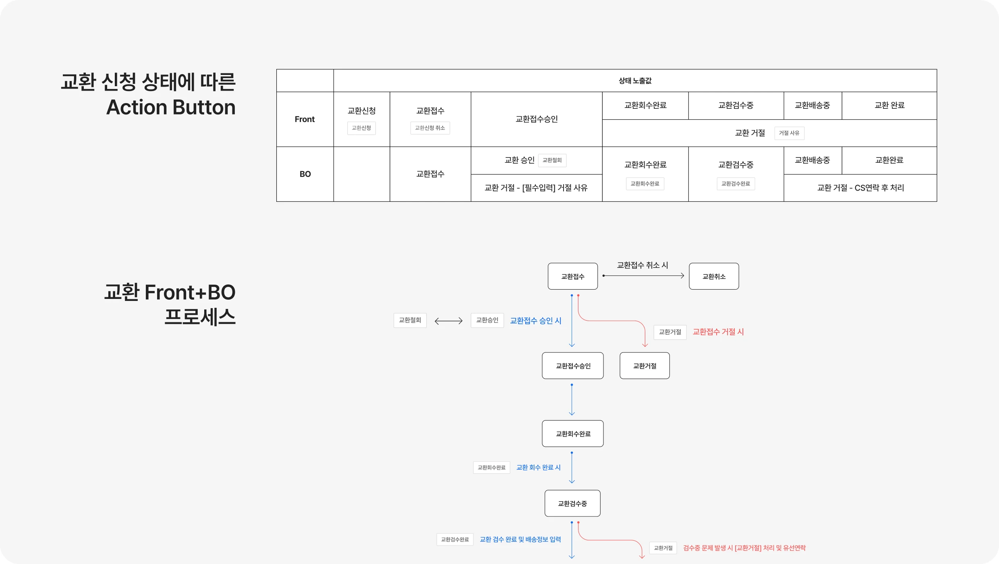
Solution 01
장바구니부터 결제까지 구매 흐름이
끊기지 않도록 연결했어요.
기존에는 상품·혜택·결제 정보가 장바구니와 주문서에 분산되어 있고 레거시 데이터가 사용자의 구매 맥락을 끊어 주요 결제 단계에서 이탈이 발생했습니다.
이에 장바구니와 주문서를 하나의 구매 의사결정 여정으로 연결하여 선택한 상품과 옵션, 배송 조건, 예상 결제 금액을 한 화면에서 확인하도록 구성했습니다. 주문서는 주문 조건 확인 → 결제 조건 설정 → 최종 확인의 세 단계로 재구성했습니다.
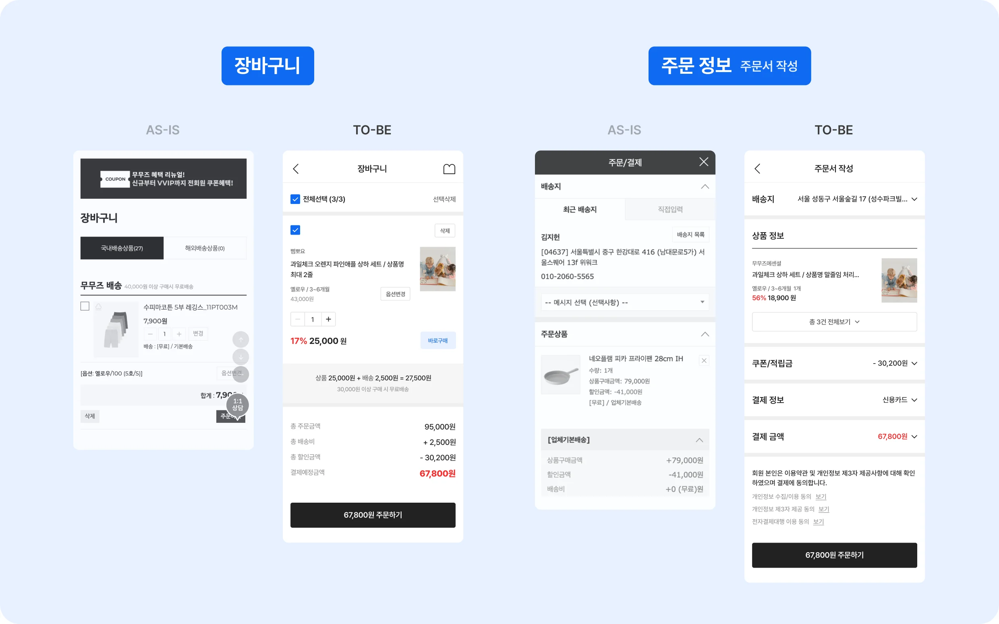
Solution 02
불필요한 정보와 이탈 요소를 제거하여 결제 완료율을 높이고자 했어요.
기존에는 쿠폰의 개수와 상세 정책이 우선 노출되고 결제 수단마다 선택 방식이 달라 사용자가 적용 가능한 혜택과 최종 결제 금액을 반복해서 확인하는 문제가 있었습니다.
이를 해결하기 위해 쿠폰 페이지에서는 현재 사용할 수 있는 쿠폰과 실제 할인 금액을 우선 제공하고 선택한 쿠폰과 총 할인 금액은 CTA에 즉시 반영해 적용 결과를 바로 확인하도록 했습니다. 결제
정보에서는 결제 수단의 선택 방식을 하나의 인터랙션으로 통일하고 화면을 이동해도 선택한 혜택과 결제 수단이 유지되도록 했습니다.
그 결과 사용자는 적용 가능한 혜택을 빠르게 비교하고 변경된 결제 조건과 최종 금액을 한 흐름에서 확인하며 결제를 이어 갈 수 있게 되었습니다.
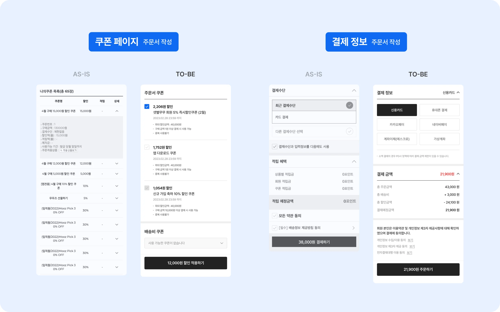
Solution 03
교환·반품 단계별로 가능한 행동과
처리 기준을 명확히 했어요.
결제 완료 이후의 주문 상태와 교환·반품 프로세스를 재설계했어요. 신청·접수·승인·회수·검수·완료뿐 아니라 취소·거절과 같은 예외 상태까지 정의하고 각 단계에서 사용자에게 필요한 안내와 실행 가능한 액션만 제공되도록 버튼 노출 조건을 설계했습니다.
또한 운영자의 처리 결과가 사용자 화면에 동일한 기준으로 반영되도록 Front와 BO의 상태값을
매핑하여 사용자는 현재 진행 단계와 다음 행동을 명확하게 파악하고 운영자는 별도의 기준 확인 없이
일관된 방식으로 교환·반품을 처리할 수 있도록 개선했습니다.
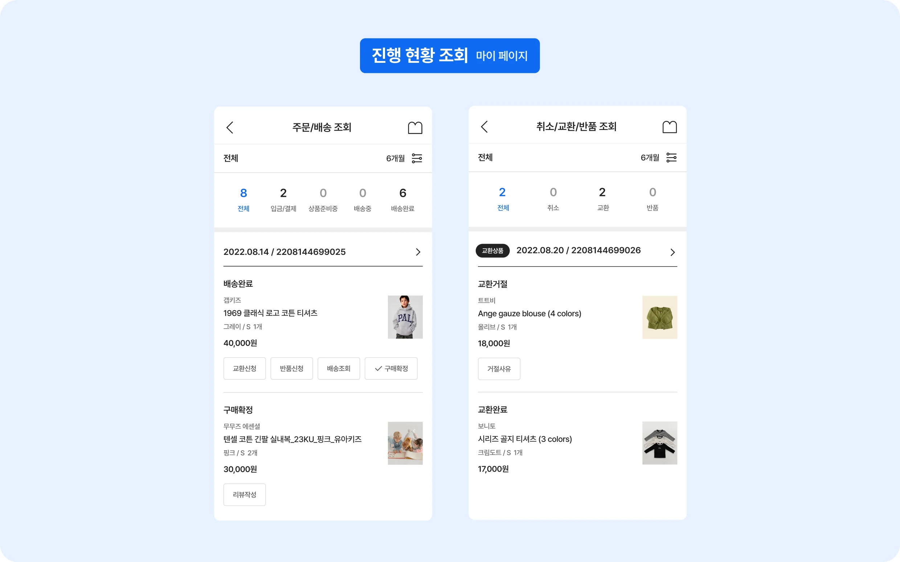
Results
구매 퍼널을 개선하고 결제 이후
사용자·운영 경험까지 연결했어요.
구매 정보와 결제 흐름을 의사결정 순서에 맞게 재설계해 결제 전환율을 8%p 높이고 장바구니·결제 이탈률을 9%p 낮췄습니다.
또한 사용자 화면과 운영자 도구의 교환·반품 상태 및 처리 기준을 연결해 사용자 편의성과 운영 효율을 함께 개선했습니다.
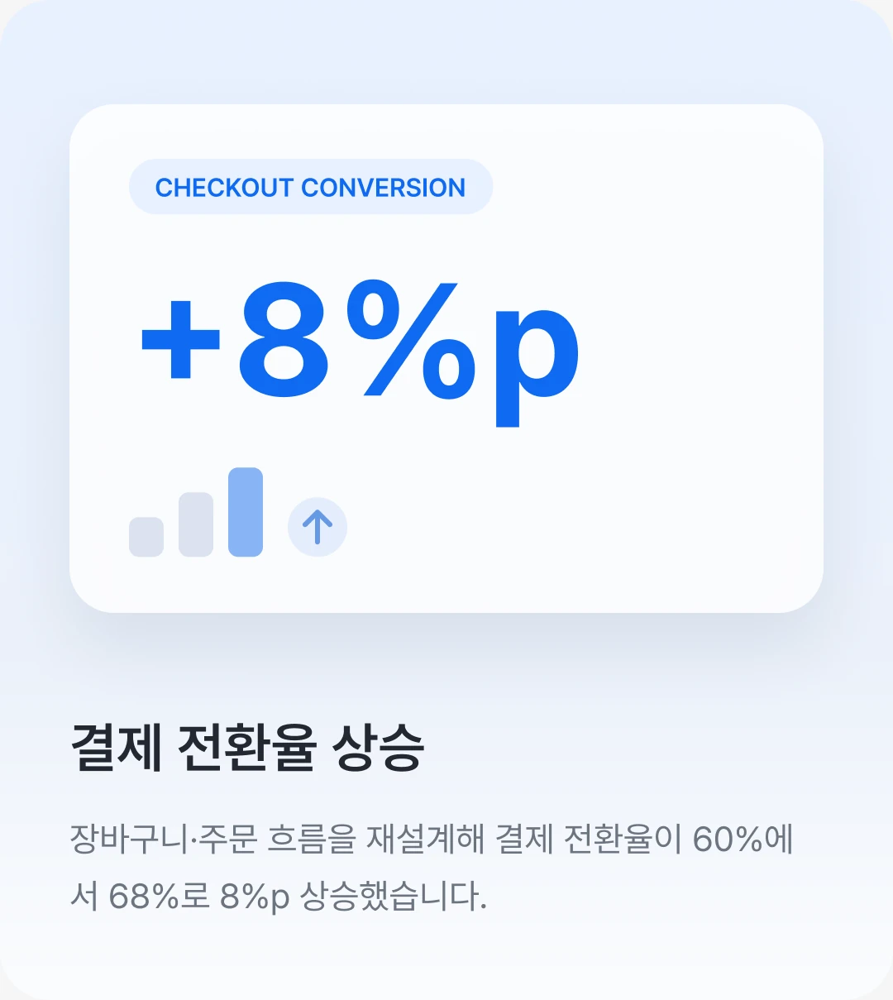
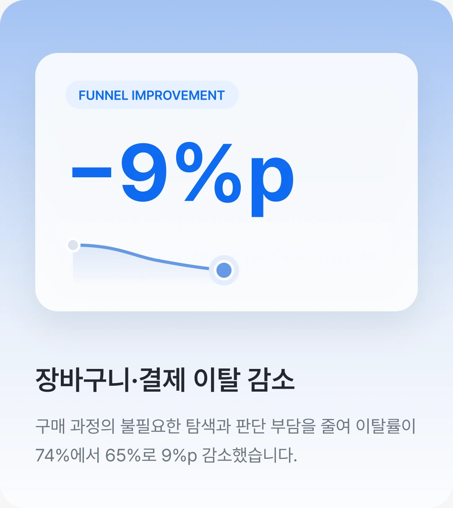
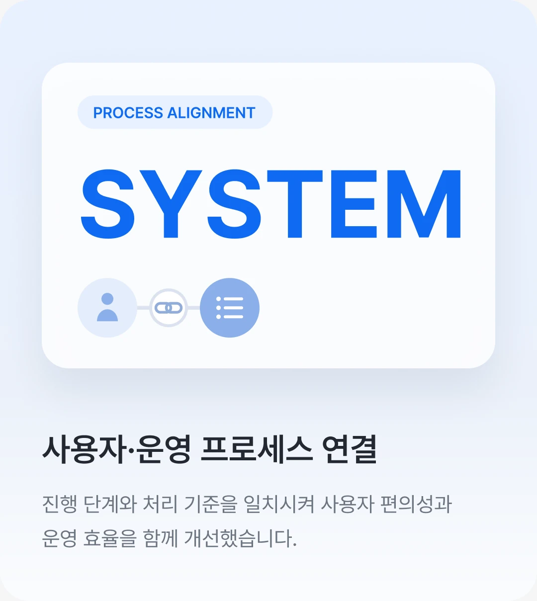